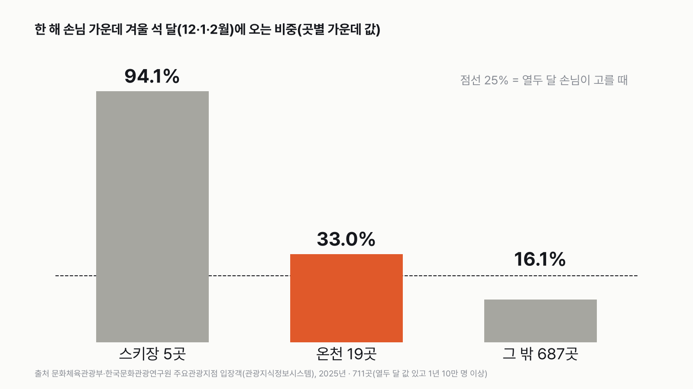
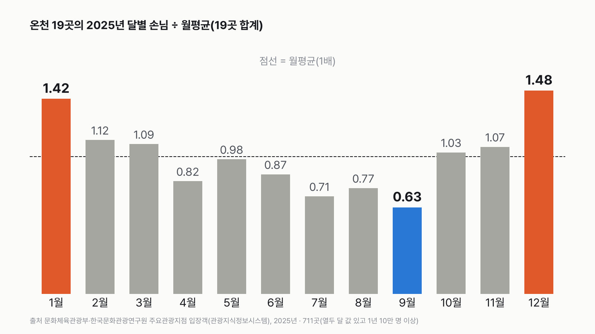
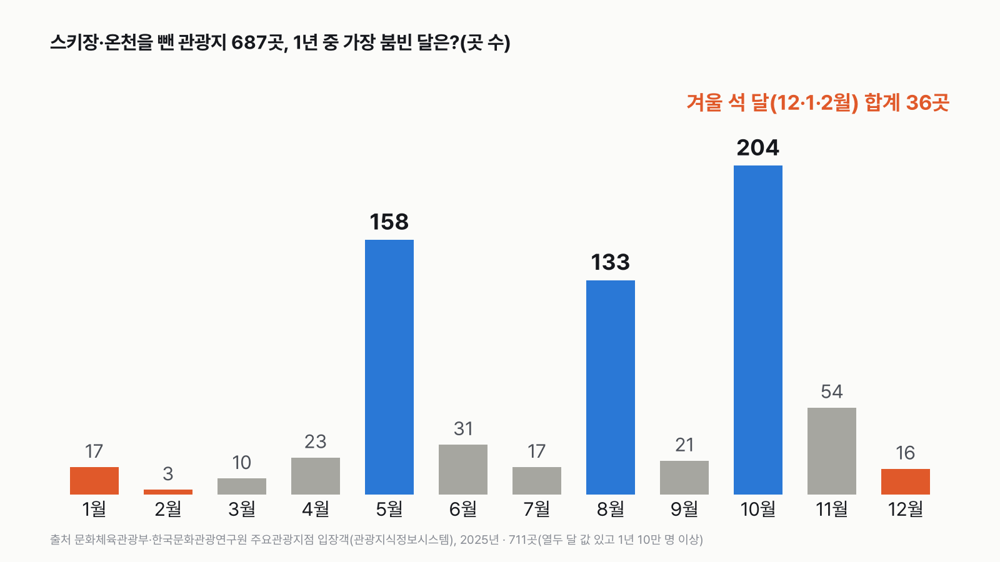

겨울에 손님이 느는 관광지, 스키장 말고는 어디일까
겨울 나들이 계획에 온천을 넣는다면, 12월과 1월은 1년 중 손님이 가장 많은 달이에요. 같은 온천도 9월에는 손님이 월평균의 0.63배예요.

3줄 요약
- 전국 주요 관광지 711곳의 2025년 입장객을 달마다 견줘 봤어요. 겨울 석 달(1·2·12월)에 한 해 손님의 몇 %가 오는지 셌어요.
- 스키장 5곳은 94.1%로 겨울에 거의 다 와요. 그다음으로 겨울 비중이 큰 묶음은 온천 19곳(33.0%)이에요.
- 온천 19곳 가운데 18곳은 12월이나 1월에 가장 붐볐어요. 나머지 관광지는 10월(204곳)과 5월(158곳)에 가장 붐빈 곳이 많아요.
| 묶음 | 관광지 수 | 겨울 석 달 비중(가운데 값) | 1년 중 가장 붐빈 달이 겨울인 곳 |
|---|---|---|---|
| 스키장 | 5곳 | 94.1% | 5곳 |
| 온천 | 19곳 | 33.0% | 18곳 |
| 그 밖 | 687곳 | 16.1% | 36곳 |
- 열두 달 손님이 고르다면 석 달 비중은 25%예요. 온천 19곳은 모두 25%를 넘었어요.
온천은 12월과 1월이 가장 붐벼요
온천 19곳의 2025년 입장객을 달마다 더하면, 12월이 월평균의 1.48배, 1월이 1.42배로 가장 많아요. 가장 적은 달은 9월(0.63배)이에요.
가장 붐빈 달로 세면 1월이 14곳, 12월이 4곳이에요. 나머지 1곳은 10월이었어요.

다른 관광지는 가을과 봄
스키장과 온천을 뺀 687곳 가운데 1년 중 가장 붐빈 달이 10월인 곳은 204곳, 5월은 158곳, 8월은 133곳이에요. 12월·1월·2월이 가장 붐빈 곳은 모두 36곳이에요.

블로그에 자주 나온 온천
네이버 블로그에서 '온천 여행', '겨울 온천'을 검색한 글 1,207편을 셌어요. 아산 온천이 55편, 수안보 41편, 덕구 온천 40편, 이천 온천 34편에 나왔어요. 입장객 통계와 다른 자료라 순위를 섞어 보지는 않았어요.
숫자를 다시 보며
'겨울엔 온천이 제일 붐빈다'는 뜻은 아니에요. 관광지마다 손님을 세는 방법(표 판매, 계측기, 추정)이 달라서, 이 글은 곳끼리 손님 수를 견주지 않고 같은 곳 안에서 달마다 견줬어요. 또 왜 겨울에 늘어나는지는 이 통계에 없어요. 이번 겨울엔 어디 가세요?
이 숫자는 어디서 왔나요
출처
기준일 2025년 1~12월 입장객이에요. 2026년 11월 13일에 받았어요.
| 데이터 | 출처 | 쓰임 |
|---|---|---|
| 주요관광지점 입장객 통계(월별) | 문화체육관광부·한국문화관광연구원, 관광지식정보시스템 | 겨울 비중, 달별 배수, 가장 붐빈 달 |
| 블로그 글 수 | 네이버 검색 API(블로그), 2026-11-13 | 많이 나온 온천 |
어떻게 셌나요
- 자료: 문화체육관광부·한국문화관광연구원 「주요관광지점 입장객 통계」(관광지식정보시스템), 월별 입장객(내국인 + 외국인).
- 대상: 2025년 열두 달 값이 모두 있고 1년 합계가 10만 명 이상인 711곳.
- 겨울 석 달 비중: 2025년 1·2·12월 입장객 합 ÷ 2025년 1년 합.
- 묶음: 관광지 이름으로 나눴어요. '스키'가 들어간 곳은 스키장(5곳), '온천·사우나·테르메·스파텔'이 들어간 곳은 온천(19곳)이에요. 아쿠아리움·워터파크는 '그 밖'이에요.
- 달별 배수: 온천 19곳의 달별 입장객 합 ÷ 그 열두 달의 평균.
- 묶는 방법은 값을 본 뒤에 정했어요. 처음엔 '스파·아쿠아'까지 넣었는데, 아쿠아리움과 워터파크가 섞여 이름에 '온천·사우나' 등이 있는 곳만 남겼어요.
한계 6가지
이 데이터로 말할 수 없는 것
- 관광지마다 세는 방법이 달라요. 그래서 곳끼리 손님 수는 견주지 않았어요.
- '주요관광지점'으로 보고된 곳만 들어 있어요. 보고되지 않은 온천과 관광지는 없어요.
- 이름으로 묶었어요. 이름에 '온천'이 없는 온천 시설은 '그 밖'에 들어갔을 수 있어요.
- 2025년 한 해 값이에요. 해마다 달라질 수 있어요.
- 블로그 글 수는 검색 결과로 센 거예요. 협찬 글이 섞였을 수 있어요(협찬 표시가 보인 글 2편).
- 왜 그 달에 붐볐는지는 이 자료에 없어요.
새 글 나오면 받아 보기
피드 리더 앱에 이 사이트 주소를 한 번 넣어 두면, 새 글이 올라올 때 앱에 떠요. 가입이나 메일 주소는 필요 없어요.
받는 법 보기
- 피드 리더 앱을 하나 골라요. 새 글을 모아 보여 주는 앱이에요. 예를 들면 Feedly나 Inoreader가 있어요. 둘 다 무료고 웹·휴대폰에서 써요.
- 앱에서 '구독 추가'(+)를 누르고 아래 주소를 붙여 넣어요.
- 끝이에요. 새 글이 올라오면 앱 목록에 떠요.
https://protofu.github.io/opendata-insight/feed.xmlFeedly를 쓴다면 여기를 눌러 바로 추가할 수도 있어요.